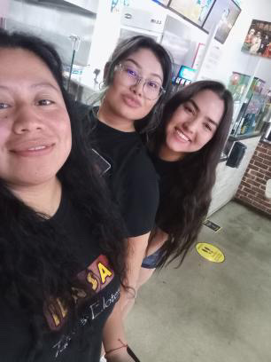
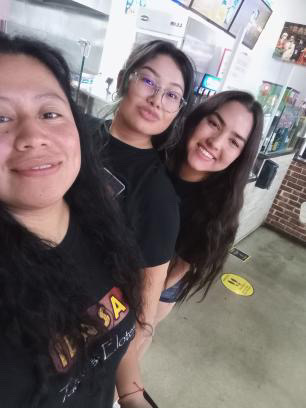
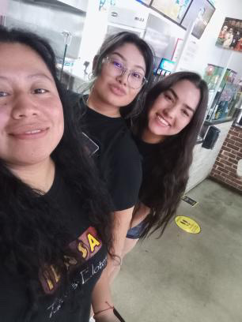

Erin Duong
My name is Erin Duong, I am currently studying at the University of California, Riverside as a Junior. I am interested in getting more involved in the Psychology community in and out of school. I am always looking for new opportunities and if you are looking for someone who is hardworking and dedicated to the field I would definitely be interested to hear about your work. I want to network more as well. If you are a current student or even someone who is in the field of Psychology I would be interested in getting to know more about you, your story, and goals. Some things about me are that I love spending time with my friends and family, I love animals and have a passion for people. I have been getting more and more into Photography lately as well. I love music and listening to new artists. I am a big concert goer. There are many more things that I love and are interested in. I would love to do big things for my community, get involved and know the people that surround me. I want to do more and help make the world a better place, but that starts with helping others on a personal level.
I find it important to make strides towards being better as a person, a community, and a society.
I am looking forward to completing college in 2024 and establishing myself into a career, and possibly continuing my education in graduate school. I would be interested in any tips and tricks as to succeeding in the college and work realm. In the future I would like to be hands-on with my community, I want to help people however I can. I do not know exactly what career I want but I am hoping to get more experience in multiple fields and multiple jobs before I settle down into one. I want to get engaged with the psychology field and understand what is all out there for me. I need to explore and with the help of others in the field I think that I will be able to do that.
Moving forward I am looking to get more experience in the field by joining research labs, trying to get internships and becoming immersed in the field. I have a growing interest in brain and behavior psychological measures and I think it would be interesting for me to join a neuroscience lab. I want to get more involved with the people around me and who have similar interests. I am always looking to gain more knowledge and better my understanding of the field. I am a lover of learning and am open to learning new things.
Experience
Cashier at Ibasa Tacos and Elotes
• Take customer's orders
• Solve customer concerns and issues
• Work to open and close responsibly
Secretary of National Honors Society; 2 Years
• Helped run meetings for student members
• Created Google Spreadsheets and Excel for Birthdays and Attendance and other items neccessary
• Organized and went to multiple Volunteer events, as well as created my own committee of writing and sending letters to hospital workers
Secretary of Best Buddies; 2 Years
• Ran meeting to interact with Buddies and Peer Buddies
• Officer Meetings; created activities
• Took attendance; worked with excel and google spread sheet for Birthdays as well
Education
UC Riverside
Portfolio
 



